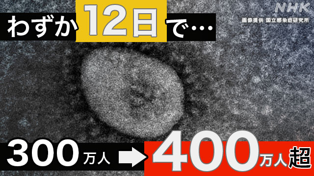
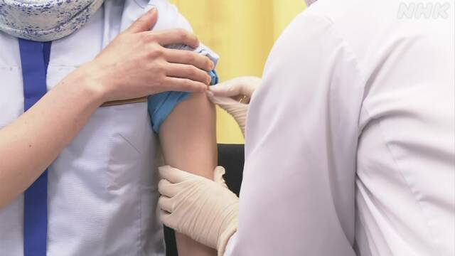
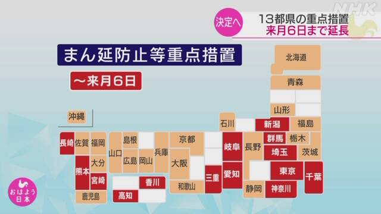

Home
HNK EASY NEWS
ABOUT ANN
2月17日 easy new
新型
しんがた
コロナ
専門家
せんもんか
「うつった
人
ひと
がいちばん
多
おお
いときは
過
す
ぎた」
「アンネの
日記
にっき
」の
新
あたら
しいアニメーション
映画
えいが
ができる
新型
しんがた
コロナ
家
いえ
で
休
やす
んでいる
人
ひと
に
食
た
べ
物
もの
を
届
とど
けるのが
遅
おそ
くなる
雪
ゆき
で
作
つく
った「かまくら」の
行事
ぎょうじ
子
こ
どもたちが
楽
たの
しむ
2月16日 easy new

新型
しんがた
コロナ
今
いま
までにうつった
人
ひと
が
日本
にっぽん
で400
万
まん
人
にん
以上
いじょう
になる
3
人
にん
で
滑
すべ
るスピードスケートのパシュート
日本
にっぽん
は
銀
ぎん
メダル
酒
さけ
を
飲
の
む
店
みせ
の
経営
けいえい
が
大変
たいへん
ワタミ「
居酒屋
いざかや
の30％を
閉
し
める」
卒業
そつぎょう
する3
年生
ねんせい
へ
黒板
こくばん
にかいた
絵
え
のプレゼント
2月15日 easy new

新型
しんがた
コロナのワクチン
会社
かいしゃ
でも3
回
かい
目
め
の
注射
ちゅうしゃ
が
始
はじ
まる
フィギュアスケートの
羽生
はにゅう
選手
せんしゅ
「これからも
誇
ほこ
りを
持
も
ちたい」
藤井
ふじい
さんが5つ
目
め
の
将棋
しょうぎ
のタイトル いちばん
若
わか
い
記録
きろく
になる
新型
しんがた
コロナウイルス 36％の
学校
がっこう
が
修学旅行
しゅうがくりょこう
をやめる
2月10日 easy new

「
重点措置
じゅうてんそち
」13
都県
とけん
は3
月
がつ
6日
むいか
まで
続
つづ
ける
高知県
こうちけん
も
始
はじ
める
フィギュアスケート
鍵山
かぎやま
選手
せんしゅ
が
銀
ぎん
、
宇野
うの
選手
せんしゅ
が
銅
どう
メダル
ギョーザをたくさん
買
か
ったまち
宮崎市
みやざきし
が
初
はじ
めて1
番
ばん
になる
「
心臓
しんぞう
が
止
と
まった
人
ひと
を
助
たす
けるためにAEDを
使
つか
ってください」
2月09日 easy new
すぐ
治療
ちりょう
が
必要
ひつよう
な
人
ひと
救急車
きゅうきゅうしゃ
で
運
はこ
ぶ
病院
びょういん
がなかなか
決
き
まらない
台湾
たいわん
「
福島県
ふくしまけん
などの
食
た
べ
物
もの
の
輸入
ゆにゅう
をまた
始
はじ
める」
東京都
とうきょうと
新型
しんがた
コロナの
検査
けんさ
キットを
濃厚
のうこう
接触者
せっしょくしゃ
に
無料
むりょう
で
送
おく
る
ポテトが
足
た
りない
売
う
るのをやめるレストランが
増
ふ
える
2月08日 easy new
北海道
ほっかいどう
雪
ゆき
が
多
おお
すぎて
列車
れっしゃ
を
動
うご
かすことができない
フィギュアスケートの
団体
だんたい
日本
にっぽん
が
初
はじ
めての
銅
どう
メダル
たくさん
雪
ゆき
が
降
ふ
った
所
ところ
雪
ゆき
を
片
かた
づけるときの
事故
じこ
に
気
き
をつけて
花粉症
かふんしょう
とオミクロン
株
かぶ
は
症状
しょうじょう
が
同
おな
じ「
早
はや
く
病院
びょういん
で
相談
そうだん
して」